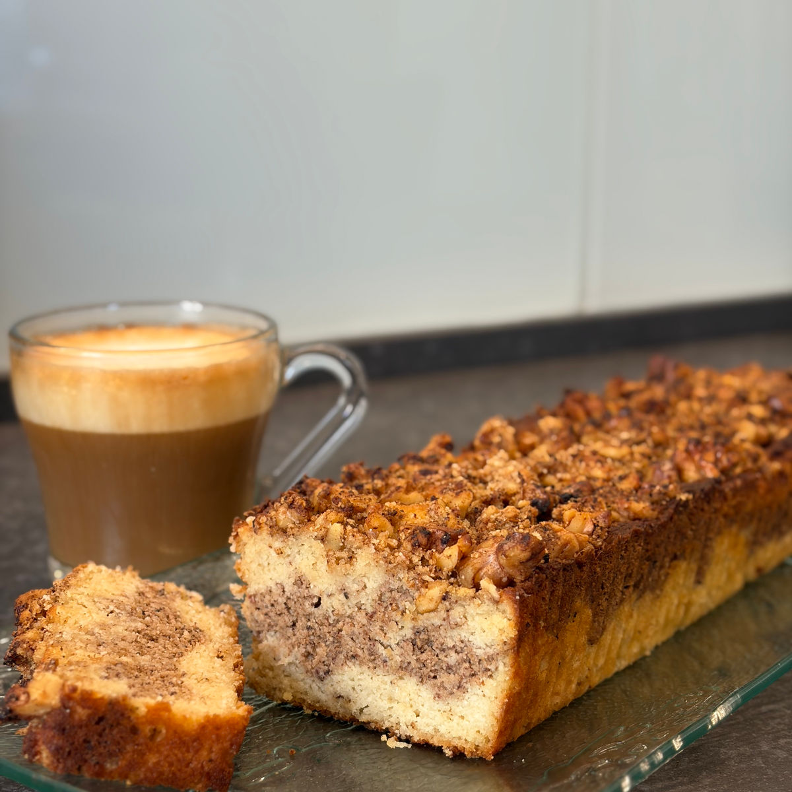
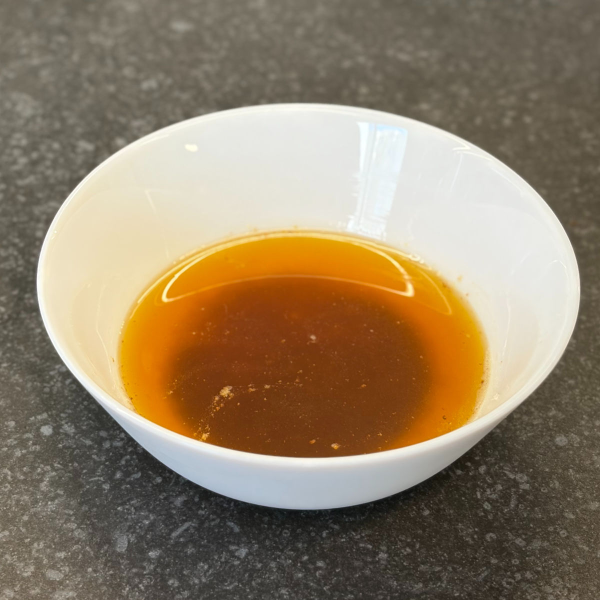
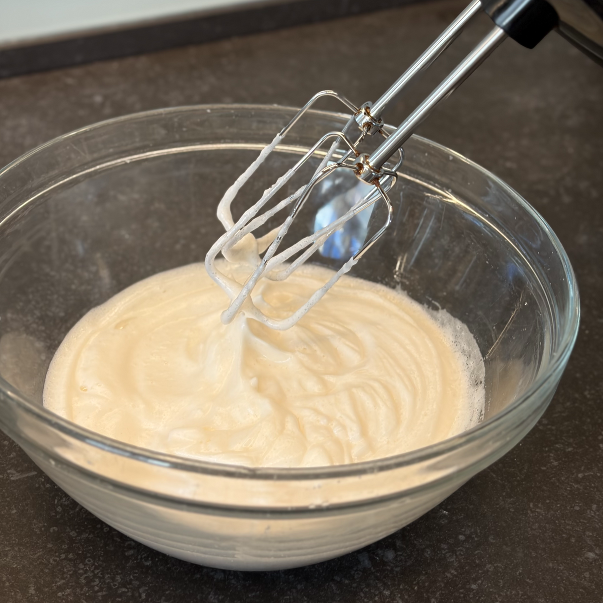
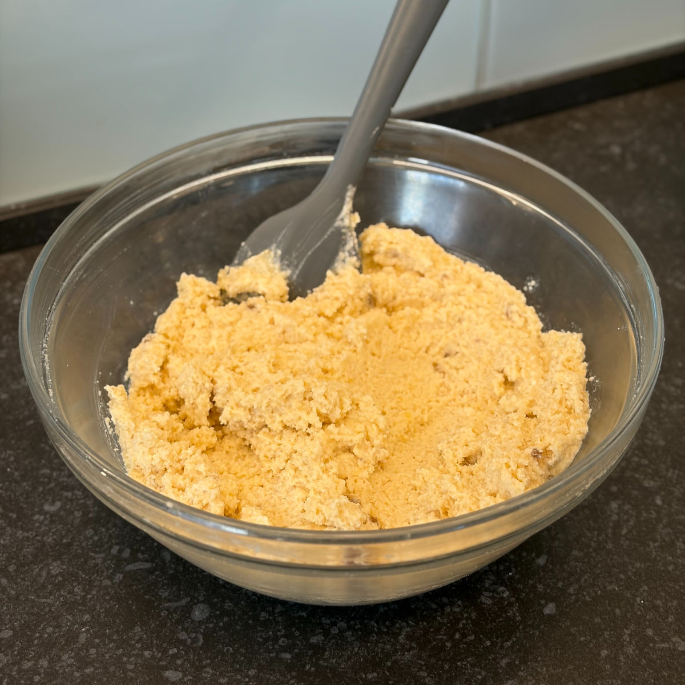
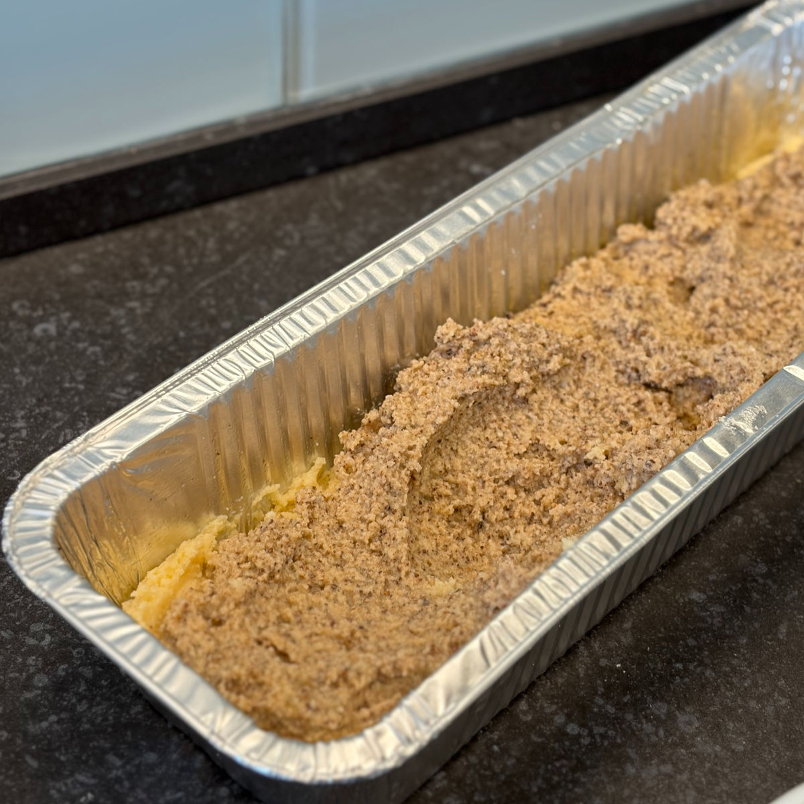
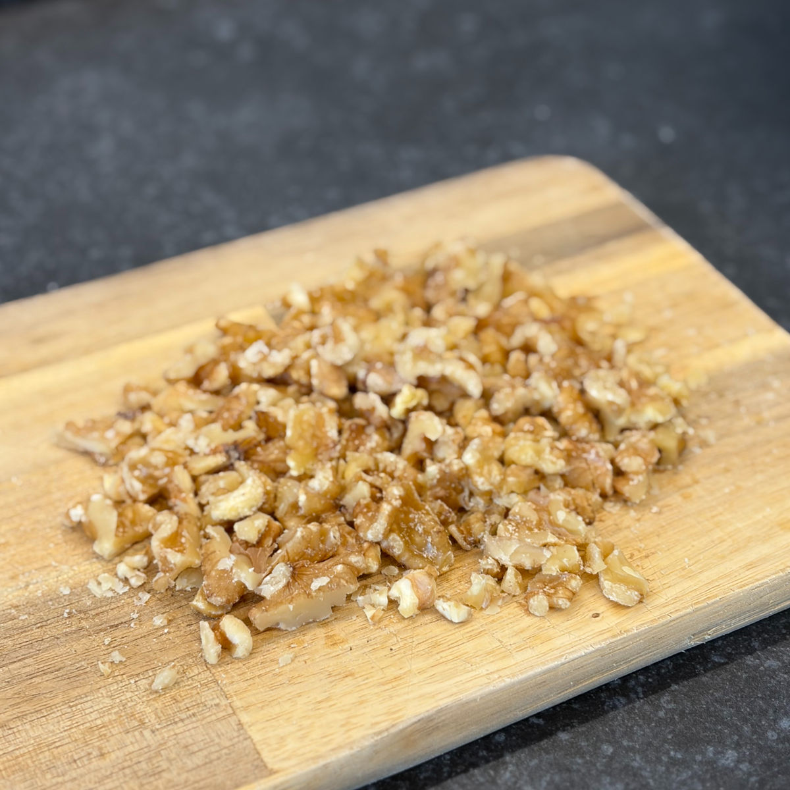
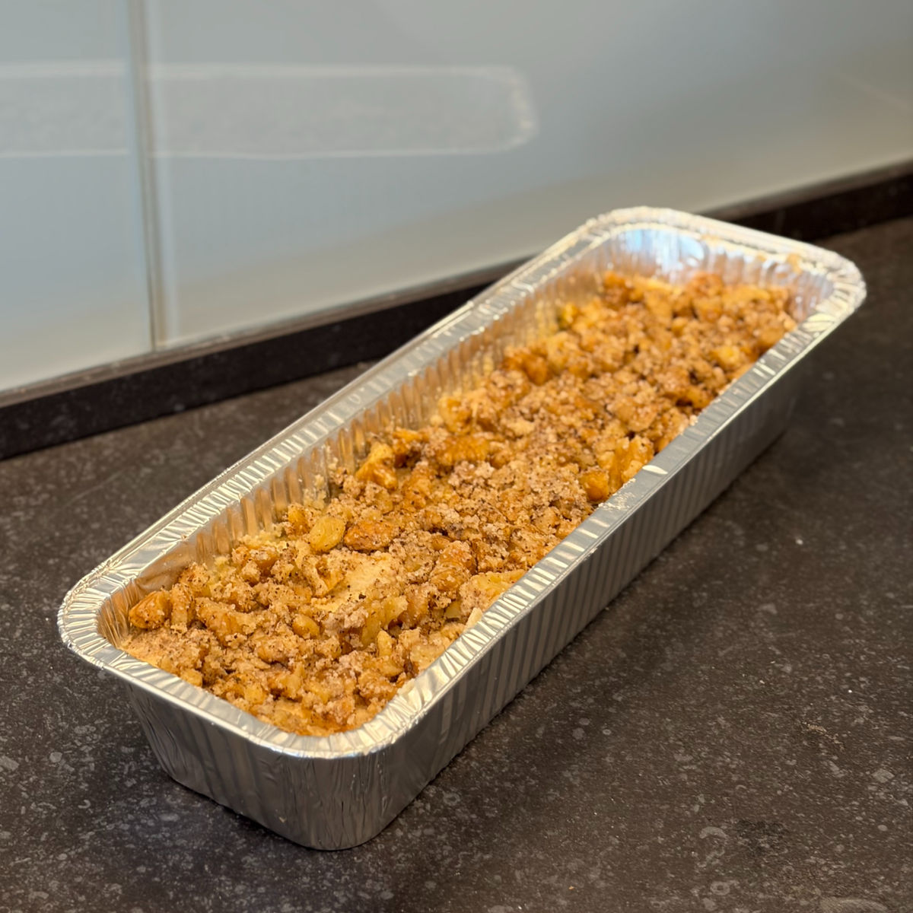

עוגת שקדים קינמון וחמאה חומה
עודכן: 5 בספט׳
טבלת ערכים תזונתיים בקירוב:
שימו לב שזו טבלה עבור עוגה עם ממתיק סוויטאנגו, שמנת לבישול וקמח שקדים (קמח עם 9.1 גרם פחמימה ל100 גרם).
| ערכים | פרוסה (50 גרם) | 100 גרם |
|---|---|---|
| קלוריות | 203.7 | 407.4 |
| פחמימות | 4.4 | 8.9 |
| חלבונים | 5.3 | 10.7 |
כשבקשות של עוקבים הופכות לעוגה המושלמת!
הכל התחיל מסקר פשוט בסטורי שבו שאלתי אתכם – מה בא לכם שאכין בפעם הבאה? הייתי בטוחה שתהיה הסכמה גורפת על קינוח מסוים, אבל הופתעתי לגלות שלכל אחד ואחת מכם יש חלום מתוק אחר.
אז מה עושים כשאין הכרעה? מחברים! הבנתי שרבים מכם רוצים עוגה בחושה ובריאה שמתאימה לסוכרתיים ולתזונת קיטו, בעוד שאחת הכותבות ביקשה "סינמון רול". באותו רגע הכל התחבר לי: עוגת סינמון רול בחושה!
כמה ימים לאחר ההחלטה על המתכון, ראיתי סטורי של נעמה גאון המופלאה על עוגת חמאה חומה – ידעתי שזה השילוב המנצח. הטעמים האגוזיים של החמאה בשילוב הקינמון יצרו עוגה רכה וחמה שנמסה בפה, עם ניחוחות שמתפזרים בכל הבית.
אז הנה היא לפניכם – העוגה שנולדה בזכותכם. תהנו!

המתכון:
כמות: תבנית אנגליש קייק במידות: 32x10.3
מרכיבים:
עוגה:
100 גרם חמאה
2 ביצים
כפית תמצית וניל
80 גרם סוויטאנגו / 95 גרם דבש (שימו לב: דבש אינו מתאים לסוכרתיים ולקיטוגנים)
1 גביע שמנת חמוצה 15% (200 מ"ל)
150 גרם קמח שקדים
30 גרם קמח קוקוס
קוורט מלח
1 כפית אבקת אפייה
1/2 (חצי) כפית סודה לשתייה
4 כפות שמנת לבישול / שמנת מתוקה (כ-44 גרם) או 3 כפות אם משתמשים בדבש
1 כף קינמון
שטרויזל אגוזי מלך:
1 כף חמאה חומה (ששמרנו בצד מהכנת העוגה)
50 גרם אגוזי מלך, קצוצים גס
1 כף קמח שקדים - 5 גרם
1 כפית קמח קוקוס - 3 גרם
1 כפית סוויטאנגו / 1 כפית דבש
הוראות הכנה:
העוגה:
חממו מחבת או סיר קטן על אש בינונית-קטנה ובשלו את החמאה עד שהיא משחימה ומפיצה ניחוח אגוזי (שימו לב לתמונות בסוף המדריך). הורידו מהאש וקררו לטמפרטורת החדר.
חממו מראש תנור ל-170 מעלות (עליון-תחתון) ושמנו תבנית אינגליש קייק בחמאה.
הפרידו את הביצים. הקציפו במיקסר את החלבונים עם תמצית הווניל ורוב כמות הממתיק (השאירו כף אחת בצד). הקציפו במהירות גבוהה עד לקבלת קציפה בהירה ותפוחה, אך לא יציבה מדי.
ערבבו בקערה נפרדת את החלמונים עם השמנת החמוצה והחמאה החומה המקוררת יחד עם המשקעים (זכרו להשאיר כף אחת מהחמאה בצד עבור השטרויזל).
הוסיפו את תערובת החלמונים לקציפת החלבונים וקפלו בעדינות פנימה כדי לא להוציא את האוויר מהבלילה.
ערבבו בקערה נפרדת את החומרים היבשים: קמח שקדים, קמח קוקוס, מלח, אבקת אפייה וסודה לשתייה. הוסיפו לבלילה וקפלו בעדינות רק עד לאיחוד.
העבירו 160 גרם מהבלילה המוכנה לקערה נפרדת. הוסיפו לה כף ממתיק (ממה ששמרתם בצד), כף קינמון ואת השמנת לבישול/מתוקה וערבבו היטב.
שפכו לתבנית חצי מהבלילה הבהירה, צקו מעליה את כל תערובת הקינמון וכסו ביתרת הבלילה הבהירה. ניתן לערבב קלות עם קיסם למראה שיש או להשאיר כפי שזה ליצירת פס קינמון במרכז.
השטרויזל
ערבבו בקערה קטנה את כף החמאה החומה ששמרתם עם כף קמח שקדים, כפית קמח קוקוס והממתיק שנותר.
הוסיפו את אגוזי המלך הקצוצים לתערובת השטרויזל.
פזרו את השטרויזל באופן אחיד על העוגה ואפו אותה בשליש התחתון של התנור כ-35 דקות, עד שקיסם הננעץ במרכז יוצא יבש. שימו לב: האפייה במפלס התחתון חשובה כדי למנוע השחמת יתר או צריבה של אגוזי המלך.
תמונות מתהליך ההכנה:

גוון החמאה חומה

קציפת החלבונים

מרקם בלילה ללא קינמון

העברת הבלילות לתבנית

גודל חיתוך האגוזים

נראות העוגה לפני אפייה